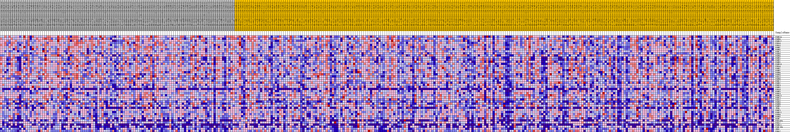
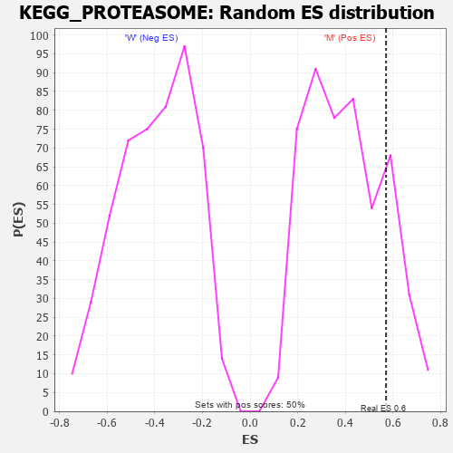

Profile of the Running ES Score & Positions of GeneSet Members on the Rank Ordered List
| Dataset | MUC16.MUC16.cls#M_versus_W.MUC16.cls#M_versus_W_repos |
| Phenotype | MUC16.cls#M_versus_W_repos |
| Upregulated in class | M |
| GeneSet | KEGG_PROTEASOME |
| Enrichment Score (ES) | 0.57074267 |
| Normalized Enrichment Score (NES) | 1.4273589 |
| Nominal p-value | 0.178 |
| FDR q-value | 0.24833064 |
| FWER p-Value | 0.852 |
| PROBE | DESCRIPTION (from dataset) | GENE SYMBOL | GENE_TITLE | RANK IN GENE LIST | RANK METRIC SCORE | RUNNING ES | CORE ENRICHMENT | |
|---|---|---|---|---|---|---|---|---|
| 1 | PSMD14 | na | 861 | 0.157 | 0.0315 | Yes | ||
| 2 | PSMB6 | na | 1149 | 0.144 | 0.0694 | Yes | ||
| 3 | PSMD12 | na | 1218 | 0.141 | 0.1104 | Yes | ||
| 4 | PSMA6 | na | 1586 | 0.129 | 0.1423 | Yes | ||
| 5 | PSMA5 | na | 1787 | 0.122 | 0.1754 | Yes | ||
| 6 | PSMB7 | na | 1809 | 0.122 | 0.2115 | Yes | ||
| 7 | PSMB5 | na | 1991 | 0.116 | 0.2430 | Yes | ||
| 8 | PSMC1 | na | 2077 | 0.114 | 0.2757 | Yes | ||
| 9 | PSMD8 | na | 2721 | 0.101 | 0.2944 | Yes | ||
| 10 | PSME4 | na | 2722 | 0.101 | 0.3247 | Yes | ||
| 11 | PSME1 | na | 3109 | 0.094 | 0.3459 | Yes | ||
| 12 | PSME2 | na | 3376 | 0.091 | 0.3683 | Yes | ||
| 13 | PSMB1 | na | 3457 | 0.090 | 0.3936 | Yes | ||
| 14 | PSMB10 | na | 3487 | 0.089 | 0.4198 | Yes | ||
| 15 | PSMA4 | na | 3594 | 0.088 | 0.4441 | Yes | ||
| 16 | PSMD7 | na | 3939 | 0.083 | 0.4626 | Yes | ||
| 17 | PSMB2 | na | 4778 | 0.072 | 0.4689 | Yes | ||
| 18 | PSMB4 | na | 5037 | 0.069 | 0.4848 | Yes | ||
| 19 | PSMD6 | na | 5427 | 0.065 | 0.4971 | Yes | ||
| 20 | PSMA3 | na | 5482 | 0.064 | 0.5152 | Yes | ||
| 21 | PSMB8 | na | 6241 | 0.056 | 0.5184 | Yes | ||
| 22 | PSMC2 | na | 6548 | 0.053 | 0.5287 | Yes | ||
| 23 | PSMD2 | na | 6679 | 0.052 | 0.5418 | Yes | ||
| 24 | PSMC6 | na | 7022 | 0.049 | 0.5502 | Yes | ||
| 25 | PSMD1 | na | 7698 | 0.044 | 0.5511 | Yes | ||
| 26 | PSMA8 | na | 8126 | 0.040 | 0.5554 | Yes | ||
| 27 | PSME3 | na | 8723 | 0.035 | 0.5550 | Yes | ||
| 28 | PSMC4 | na | 9001 | 0.033 | 0.5598 | Yes | ||
| 29 | PSMD13 | na | 9234 | 0.031 | 0.5649 | Yes | ||
| 30 | PSMC3 | na | 9401 | 0.030 | 0.5707 | Yes | ||
| 31 | PSMA1 | na | 10055 | 0.024 | 0.5662 | No | ||
| 32 | PSMD3 | na | 11924 | 0.012 | 0.5358 | No | ||
| 33 | PSMB9 | na | 12770 | 0.006 | 0.5223 | No | ||
| 34 | PSMF1 | na | 16599 | -0.008 | 0.4555 | No | ||
| 35 | IFNG | na | 17090 | -0.011 | 0.4498 | No | ||
| 36 | PSMC5 | na | 17876 | -0.015 | 0.4401 | No | ||
| 37 | PSMD11 | na | 18371 | -0.017 | 0.4364 | No | ||
| 38 | PSMD4 | na | 21452 | -0.032 | 0.3901 | No | ||
| 39 | PSMB3 | na | 24191 | -0.043 | 0.3534 | No | ||
| 40 | POMP | na | 32983 | -0.073 | 0.2162 | No | ||
| 41 | PSMA6P4 | na | 34313 | -0.078 | 0.2154 | No | ||
| 42 | PSMA7 | na | 34766 | -0.079 | 0.2308 | No | ||
| 43 | PSMB11 | na | 42473 | -0.104 | 0.1224 | No | ||
| 44 | PSMC1P4 | na | 45178 | -0.114 | 0.1076 | No | ||
| 45 | SEM1 | na | 47582 | -0.125 | 0.1016 | No | ||
| 46 | PSMA2 | na | 47594 | -0.125 | 0.1389 | No |

